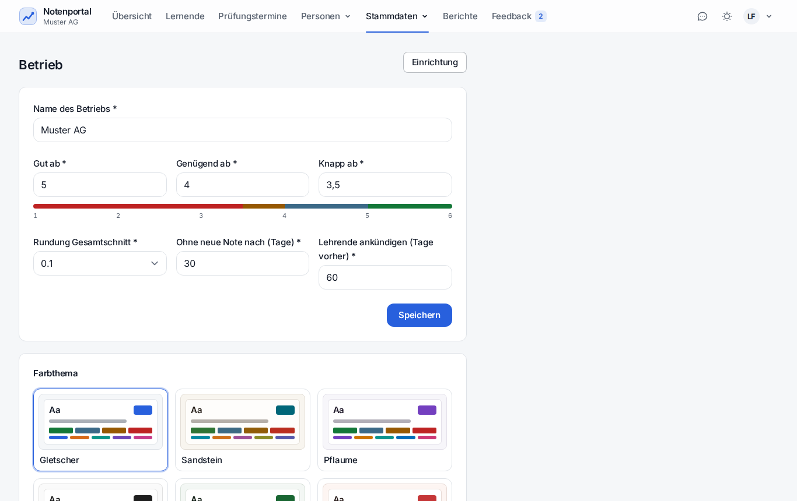

Eine Sicherung enthält beides: die Datenbank und die Dateien der Lernenden. Nur zusammen ergeben sie ein wiederherstellbares Portal.
| Art | Zeit | Inhalt | Aufbewahrung | Ort |
|---|---|---|---|---|
| Automatisch (Portal) | täglich 02:30 | ZIP mit datenbank.sql, dateien/lernende/…, LIESMICH.txt | die 14 neusten | storage/app/private/sicherungen/ |
| Kopie ausser Haus | nach jeder Sicherung | dieselben ZIP-Dateien | Ziel bestimmt | Ordner (Netzlaufwerk) oder SSH-Server, per rsync |
| Auf Knopfdruck | bei Bedarf | wie automatisch | zählt zu den 14 | Admin → Betrieb → «Jetzt sichern» |
| Manueller Dump | vor jedem Eingriff | nur Datenbank | von Hand | ~/db-backups/ |
| VM-Snapshot | vor grossen Änderungen | ganze Maschine | von Hand | Virtualisierung |
Herunterladen, Löschen und der Zustand der Sicherungen stehen im Portal unter Admin → Betrieb. Ist die neuste Sicherung älter als zwei Tage oder ist eine fehlgeschlagen, erscheint dort und im Dashboard eine Warnung.

sudo mysqldump --single-transaction notenportal \
> ~/db-backups/notenportal-$(date +%Y%m%d-%H%M)-vor-eingriff.sql
ls -lh ~/db-backups/ | tail -3# 1. Sicherung auspacken
unzip notenportal-JJJJMMTT-HHMMSS.zip -d /tmp/wiederherstellung
# 2. Aktuellen Stand vorher wegsichern – auch einen kaputten
sudo mysqldump --single-transaction notenportal > ~/db-backups/notenportal-vor-wiederherstellung.sql
# 3. Datenbank einspielen
sudo mysql notenportal < /tmp/wiederherstellung/datenbank.sql
# 4. Dateien zurückspielen
rsync -a /tmp/wiederherstellung/dateien/lernende/ /var/www/notenportal/storage/app/private/lernende/
# 5. Rechte und Caches
sudo chgrp -R www-data storage/app/private && sudo chmod -R g+rwX storage/app/private
sudo -u www-data php artisan optimize:clear
# 6. Kontrolle
php artisan notenportal:bereitschaftDanach /login aufrufen, mit einem Konto anmelden und stichprobenweise prüfen, ob
Noten, Dokumente und Prüfungen da sind.
Soll nicht alles überschrieben werden, den Dump in die Kopie einspielen und dort abgreifen:
sudo mysql notenportal_probe < /tmp/wiederherstellung/datenbank.sql
sudo mysql notenportal_probe -e "SELECT * FROM noten WHERE lernender_id = 7;"| Art | Datum | Erfolg / Fehlschlag | ADMIN | Bemerkung |
|---|---|---|---|---|
| Restore-Test (Datenbank + Dateien) | 11.09.2026 | Erfolg | David von Allmen | ZIP notenportal-20260911-113535.zip in notenportal_probe: 38 Tabellen, Zeilenzahlen identisch mit Prod (ausser cache_locks), Dokumente 2 = 2 |
| Wiederherstellung nach Migrationsabbruch | 10.09.2026 | Erfolg | David von Allmen | Halbmigrierten Stand gesichert, notenportal aus dem Dump von 13:53 neu aufgebaut, Migration korrigiert und erneut ausgeführt |
Jeder Restore – auch jeder Test – gehört mit einer Zeile hierher.